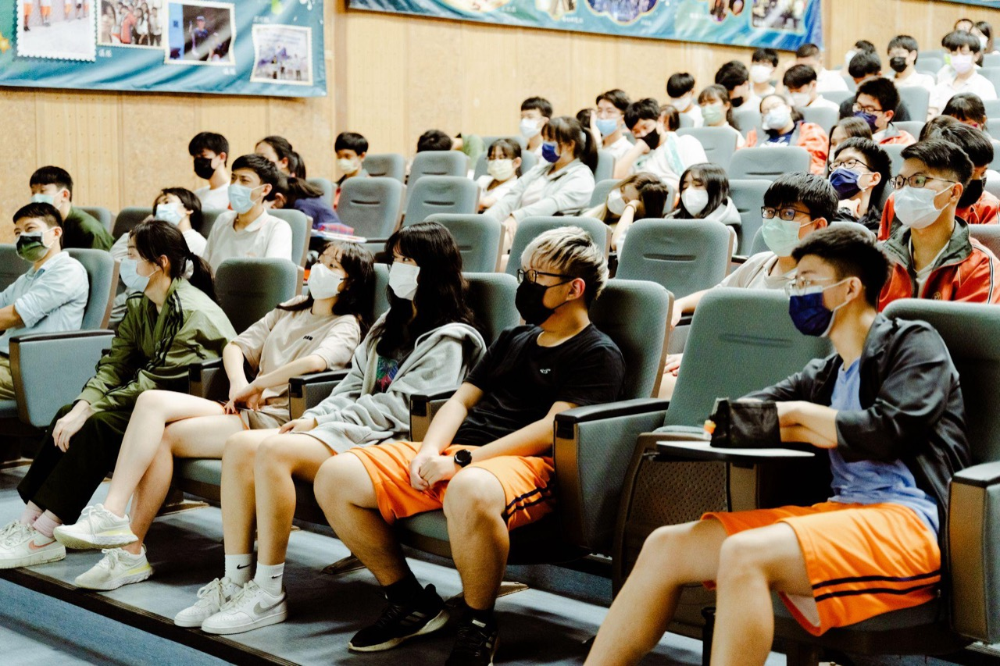

定義資訊
先弄清楚關鍵關係人真正要什麼，定出目標。
Mission & Vision
我們想打造一個未來：不分城鄉與家境，每個青年都握有同一套工具，會判斷、會行動——學校看見成效，企業看見潛力，青年看見自己走過的路。
Why・世代痛點
選項很多，卻不知道怎麼比較；想法很多，卻不知道從哪裡開始。升學一結束，幾乎沒人教青年怎麼面對真實的選擇。
數字背後是真實的心聲：「很努力，卻不知道方向」「怕選錯」。所以我們相信——與其更早做決定，青年更需要看懂自己與社會。
Mission・使命
我們不替誰決定未來，也不催青年早做選擇。每到一個路口，我們想給的不是標準答案，而是一套能一直用的能力。
先弄清楚關鍵關係人真正要什麼，定出目標。
分清表面說法和真正需求，找出真正的問題。
把想清楚的需求，變成做得到的方案。
Since 2021・起點
鄉育從 2021 年一所地方高中出發，逐步走進更多教室、大學與合作現場——想把選擇的能力，交到每位青年手上。

Values・核心價值
每一項都從「我們相信，所以我們承諾」出發，決定我們怎麼陪青年、怎麼合作。
最持久的成長是學會自己選路。所以我們承諾：陪在青年身旁，把決定權留給他。
看不見的成長容易被當成沒發生。所以我們承諾：用前後測和作品，把能力變成看得見的證據。
能力要在真實問題裡才長得出來。所以我們承諾：把學校、企業和基金會連成一張網。
Taught・國際同軌
在美國，Alliance for Decision Education 自 2014 年起推動 K-12 決策教育，主張決策力和閱讀、數學一樣，可以被學習、隨時間長大。
鄉育想做的，是把這套國際共識帶回台灣：整合認知科學、設計思維與決策智能，並以企業真實情境為學習場域——這在台灣幾乎還是一片空白。